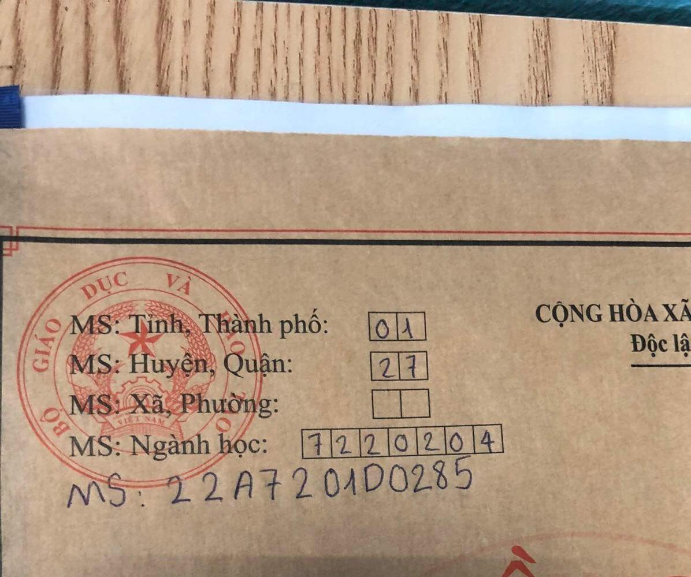
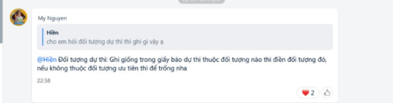
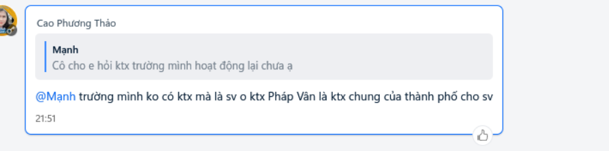

37. giấy xác nhận vắng mặt là gì vậy ?

vào trang http://nhaphoc.hou.edu.vn/ đăng nhập vô sẽ có phần Mã hồ sơ dùng mã hồ sơ đó để viết vô các vị trí sau
và phần số thẻ hs, sv nằm ở trang thứ 2 trong tờ khai lí lịch sinh viên (phía dưới sô chứng minh thư, thẻ căn cước)
MHN
Ghi giống trong giấy báo dự thi thuộc đối tượng nào thì điền đối tượng đó , bạn tra google từ khóa đối tượng ưu tiên rồi xem bản thân có thuộc đối tượng nào không, nếu không thuộc đối tượng ưu tiên thì để trống
ghi tràn ra
nền nào cũng được
hiện ktx Mĩ Đình có thể đón mn qua ở, Tuy Nhiên khuyến khích ở ghép cùng bạn học và không quá xa trường để tiện đi lại
tiền BHYT BẮT BUỘC phải nộp còn thẻ BHYT thì không bắt buộc
trước 30/9 nhưng các bạn nên hoàn thiện học phí và xin dấu các giấy tờ liên quan càng sớm càng tốt nhé, vì đề phòng trục trặc cần phải giải quyết thêm thì vẫn còn thời gian để xử lý
chụp TỪNG trang rồi tải HẾT lên
Tốt nghiệp 2022 không có bằng tốt nghiệp gốc thì bỏ qua , đăng giấy chứng nhận tốt nghiệp tạm thời
lấy tại giấy chứng nhận kết quả thi kì thi tốt nghiệp thpt năm 2022
không sao điểm có hết trên hệ thống rồi
không cần
sổ hộ khẩu
hồ sơ lí lịch học sinh sinh viên
cầm giấy báo nhập học rồi ra xã xin giấy nvqs
giấy báo nhập học bản gốc nhà trường sẽ gửi về cho sinh viên, nếu chưa nhận được thì để trống khi nào nhận đươc bổ sung sau
tải file giấy báo nhập học thì vô http://nhaphoc.hou.edu.vn/ đăng nhập vào sau đó kéo xuống bên dưới có chỗ tải giấy báo nhập học
không
chụp 1 bản gửi lên hệ thống, còn lúc lên trường nộp thì nộp cả 2 bản đó nhé
để trống không phải ghi
không cứ đúng 4x6 và không quá 3 tháng từ khi chụp
được nhưng phải trước 30/09, cố gắng hoàn thành sớm để nhỡ xảy ra trục trặc còn có thời gian mà xử lí
không phải con thương binh bệnh binh thì không có gì để chụp
bản gốc, nếu chưa có bản gốc chưa có thì up tạm bản sao công chứng rồi đến ngày 24 cập nhật bản gốc sau
cùng một người là được, nhưng khuyến khích dùng ảnh giống nhau
uh
đang cập nhật... chưa rõ vấn đề này, hãy hỏi giảng viên trong nhóm zalo
thí sinh thuộc khu vực nào điền khu vực đó, giống giấy báo dự thi: 1; 2; 2NT, 3
điểm thưởng là tổng tất cả các điểm cộng của thí sinh bao gồm: điểm ưu tiên theo khu vực / đối tượng + điểm ưu tiên xét tuyển (diện HSG, KHKT, QG) và chứng chỉ tiếng anh quốc tế) Thí sinh có thể bỏ qua nếu không có điểm thưởng
có
cần chứ nếu ở xã không thông báo làm giấy nvqs thì phải tự mình mang giấy báo nhập học ra ủy ban xã để làm
Bạn chỉ cần ghi nhớ quá trình học tập của bản thân, gồm niên khóa học, tên trường học và địa chỉ trường học. Sau đó, bạn hãy ghi một cách tóm tắt, ngắn gọn vào trong sơ yếu lý lịch của mình. Lưu ý rằng các thông tin trong quá trình học tập cần trung thực, chính xác và không gian dối!
cục trưởng cục cảnh sát quản lí hành chính về trật tự xã hội
- ưu tiên khu vực (hoặc sổ hộ khẩu hoặc học bạ) cái nào ưu tiên cao hơn (nhiều điểm hơn thì chụp) - ưu tiên đối tượng là các giấy tờ chứng minh (dân tộc => giấy khai sinh, Biên giới hải đảo, dân tộc => hộ khẩu+khai sinh)

để trống